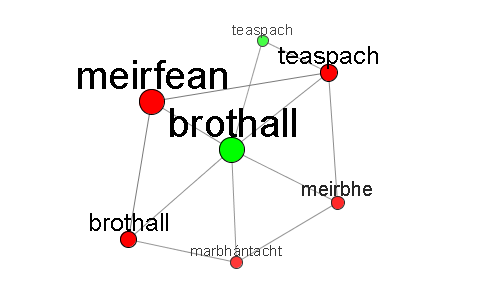
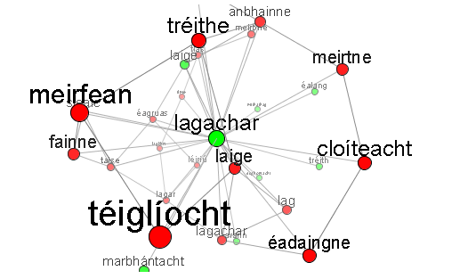

Líonra Séimeantach na Gaeilge:
Details
Kevin P. Scannell
Using the 3D Browser
First, enter a word or phrase into the aimsigh.com search box. If the word has more than one possible part of speech, you will be asked to select the one you want. In most cases, though, a Java applet will automatically load in the space underneath the search box, displaying a small portion of the LSG centered at your chosen word.
Here are the possible actions within the 3D browser:
- Rotate. Click and drag on empty space to rotate the graph. By releasing while the mouse is in motion, you can cause the graph to keep spinning.
- Navigate. You can travel through the network by clicking nodes. This will center the node that you click and will redraw the portion of the LSG nearest the new center.
- Get Info. Hover the cursor over a node and the part-of-speech and declension of the word will appear in a tiny popup window.
- Drag Nodes. Click and drag a node to move it around. When you release, it bounces back into place.
The green nodes are "hubs" — words representing core meanings. Each red node corresponds to an orthographic word and is connected to the green hub that gives its core meaning (or to more than one green hub if the word is ambiguous). Red-Red links are synonyms — they get organized in rings around a hub. It's the Green-Green links that provide the real richness of the network — these indicate more general semantic relationships like hypernymy/hyponymy between core meanings.
For example, if you enter the word meirbhe into the search box, you should see something like this in your browser:

This means that the word meirbhe has three basic senses, indicated by the green hubs brothall (En. "sultriness, humidity"), easpa aeir (En. "stuffiness"), and lagachar (En. "weakness"). If you click the green brothall node, you'll see this:

Now brothall is centered and is surrounded by five red nodes which are synonyms of this core sense. In addition, there is one semantically-related green node labelled teaspach ("hot weather"). Had you chosen the lagachar sense, things get much more complicated:

First of all, as sometimes happens, the green lagachar node actually represents two core senses: "weakness" and also "faintness". So you'll see some red nodes corresponding primarily to the first sense (lag), others more like the second sense (meirfean), but many others that correspond to both. This makes for some very rich interactions in the network. Also, there are a number of semantically-related green nodes that may be hard to make out in the image: marbhántacht ("lethargy"), soghontacht ("vulnerability"), míthathag ("flimsiness"), éalang ("a weak spot"), etc.
Creating the database
This project stretches back to 2002 when I created a simple Irish language thesaurus based on the free Roget's Thesaurus from Project Gutenberg. I presented that work at the TALN 2003 conference in Batz-sur-Mer, France: Automatic thesaurus generation for minority languages: an Irish example. I was never very happy with the quality of the resulting thesaurus, mostly because it inherited all of the flaws of the free Roget's: an unwieldy structure not particularly useful for computational applications (long lists of quasi-synonyms grouped under general headings), a lack of modern terminology (the free Roget's is from the 1913 edition), and no rich semantic relations like hypernymy/hyponymy. Because of this I decided not to distribute the thesaurus widely until I could make significant improvements in its quality.
As you'll read in the TALN paper linked above, it was clear to me even back then that many of the quality issues could be resolved simply by using Princeton's WordNet in place of Roget's. This has turned out to be true. Also important, though, is that I now have much more robust methods for disambiguating English translations of Irish words, and this has also improved matters greatly.
The heart of the matter in creating the Irish wordnet is to map Irish words over to one or more English synsets. This first step in doing this is to use the the English "glosses" that are part of my Irish lexical database. These are usually one- or two-word definitions like the ones you would find in Ó Dónaill's dictionary. When the English glosses are unambiguous, there is no problem: stáplóir is glossed as "stapler" and this lies in a unique English synset. The hard work comes in disambiguating glosses like "bank", or "ball", or "flag".
My approach to disambiguation uses a corpus of English texts and their Irish translations, aligned sentence-by-sentence. Consider for example the word bruach which has "bank" as one of its glosses. I extract all Irish sentences containing bruach (or bhruach, mbruach, etc.) and the corresponding English sentences. Some of the English sentences will contain the word "bank", and the hope is that the additional context provided by these sentences can be used to decide which is the correct sense of "bank" using standard techniques in word-sense disambiguation. To ensure enough data are available, I am very inclusive about what goes into the bilingual corpus. For example, the Irish words and their glosses are included, even though they do not form complete sentences. Nevertheless, the glosses alone are often sufficient to determine the correct sense. This fact is well-known to lexicographers, including Ó Dónaill et al, who gloss words like feileastram with two ambiguous English words ("flag, iris") but with no fear of confusion. The original version of the thesaurus from 2003 relied primarily on the glosses for disambiguation since I had not yet created the big bilingual corpus.
Another important technical note: I don't in fact map Irish words directly to Princeton synsets. This is because for many words, the sense distinctions made by the Princeton lexicographers are too fine even for intelligent non-lexicographers to make reliably, and certainly too fine for statistical methods. In addition, there are many distinctions made in Irish that are not made in English (e.g. "dearg" vs. "rua" in Irish would map to a single Princeton synset) and these are precisely the distinctions one does not want to give up in a monolingual Irish language resource. So for these reasons I added a separate layer - an "intermediate wordnet" - between Irish and English with mappings in both directions. It's still really an English wordnet, but one that is tailored to the needs of Irish. Tomás de Bhaldraithe's English-Irish dictionary was very useful in constructing this; the senses given by de Bhaldraithe under each English word give a rough first approximation of the sense inventory of the intermediate wordnet.
© Copyright 2007 Kevin P. Scannell